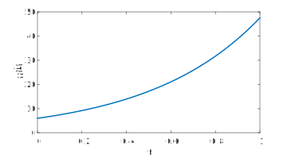
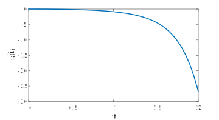
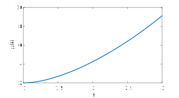

Section 1.6 Linear, variable coefficient
¶Refer to section 1.6 of the text (pp. 40-42).
We now consider how to solve a more general first-order linear problem,
\begin{equation*}
\dd{y}{t} = a(t)y(t) + q(t) \text{.}
\end{equation*}
One approach is to upgrade the integrating factor \(M=e^{-at}\) we used in (1.4.1). What made that work is that \(M'=-aM\text{.}\) For a nonconstant \(a(t)\text{,}\) the same thing is accomplished by \(M(t) = e^{-b(t)}\text{,}\) so long as \(b'=a\text{.}\) That is, we need \(b(t)\) to be any antiderivative of \(a(t)\text{.}\) With that, we can essentially repeat the same calculation as before:
\begin{align*}
M(t) y'(t) - a(t) M(t) y(t) \amp = M(t)q(t) \\
\dd{}{t}\bigl[ M(t) y(t) \bigr] \amp = M(t) q(t) \\
M(t) y(t) \amp = M(0) y(0) + \int_0^t M(s) q(s)\, ds\text{.}
\end{align*}
We now pick the antiderivative \(b(t)\) such that \(b(0)=0\text{.}\) That is, let
\begin{equation*}
M(t) = \exp\left( -\int_0^t a(r)\, dr \right)\text{,}
\end{equation*}
and \(M(0)=1\text{.}\) Now the solution above becomes
\begin{equation*}
y(t) = \exp\left( \int_0^t a(r)\, dr \right) y(0) +
\int_0^t \exp\left( \int_0^t a(r)\, dr - \int_0^s a(r)\, dr \right) q(s)\, ds\text{.}
\end{equation*}
This mess inspires the definition
\begin{equation}
G(s,t) = \exp\left( \int_s^t a(r)\, dr \right)\text{,}\label{eq-growth-factor}\tag{1.6.1}
\end{equation}
which we call the growth factor. So we have the more manageable
\begin{equation}
y(t) = G(0,t)y(0) + \int_0^t G(s,t) q(s)\, ds\text{.}\label{eq-fl-solution}\tag{1.6.2}
\end{equation}
This format takes us back to familiar territory. The total solution has one part (the null solution) that is evolution of the initial value and another (particular solution) that comes from evolution of an impulse of size \(q(s)\) at each time \(0 \le s \lt t\text{.}\) The only difference from the constant-coefficient case is how to express the growth factor.
We can summarize finding the solution of a linear first-order ODE as two steps: 1. Integrate the growth rate to get the growth factor. 2. Integrate the product of the growth factor with the forcing function.
Let's solve \(y'=2y+1\text{,}\) with \(y(0)=6\text{.}\) We have \(a(t)=2\text{,}\) hence \(G(s,t)=\exp[2(t-s)]=e^{2(t-s)}\text{.}\) So the solution is
\begin{equation*}
e^{2t}\cdot 6 + \int_0^t e^{2(t-s)}\, ds
= 6e^{2t} - \frac{1}{2} \left[ 1 - e^{2t} \right] = - \frac{1}{2} + \frac{13}{2} e^{2t}\text{.}
\end{equation*}
dydt = @(t,y) 2*y + 1;
[t,y] = ode45(dydt,[0,1],6);
plot(t,y)
xlabel('t'), ylabel('y(t)')

This example is linear with constant coefficients, so the result is something we have seen before. The point is that the approach we have now is a true generalization, working for all those previous problems as well.
Example 1.6.2
To solve \(y'=2ty - t\) with \(y(0)=0\text{,}\) we identify \(a(t)=2t\text{.}\) Hence \(G(s,t)=\exp(t^2-s^2)\text{.}\) Then
\begin{equation*}
y(t) = \int_0^t (-s) e^{t^2-s^2}\, ds = \frac{1}{2} \left( 1 - e^{t^2} \right)\text{.}
\end{equation*}
dydt = @(t,y) 2*t*y - t;
[t,y] = ode45(dydt,[0,2],0);
plot(t,y)
xlabel('t'), ylabel('y(t)')

Example 1.6.3
Consider the problem \(ty' + 2y = 4t^2\text{,}\) with initial value \(y(1)=2\text{.}\) In order to identify this with the standard way we present a linear, first-order ODE, we have to isolate the \(y'\) term to get
\begin{equation*}
y' = -\frac{2}{t}y + 4t\text{.}
\end{equation*}
Note that we may need to stay away from \(t=0\text{,}\) where the variable coefficient blows up. Fortunately, it's easy to use the growth factor formula starting from any value of \(t\text{.}\) The growth factor is, as usual,
\begin{equation*}
G(s,t) = \exp\left( \int_s^t -\frac{2}{r}\, dr \right) = \exp\left( -2 \log(t/s) \right) = \left(\frac{s}{t}\right)^2\text{.}
\end{equation*}
The solution is
\begin{align*}
y(t) \amp = G(t,1)y(1) + \int_1^t G(s,t) q(s)\, ds \\
\amp = 2t^{-2} + \int_1^t \left(\frac{s}{t}\right)^2 4s\, ds \\
\amp = 2t^{-2} + t^{-2}\left[ t^4-1^4 \right] = t^2 + t^{-2} \text{.}
\end{align*}
We now do see that trying to go backward to time zero would cause the solution to blow up. (That's in the math sense, not the chemical engineering sense, but still.)
dydt = @(t,y) (4*t^2 - 2*y)/t;
[t,y] = ode45(dydt,[1,3],2);
plot(t,y)
xlabel('t'), ylabel('y(t)')

As you know, many integrals are difficult or impossible to reduce to simple fomulas, so we have to temper our expectations. Actually it's a great situation for a computer, which can apply the formulas blindly and yet do a much wider variety of integrals than we can, or do them numerically if need be.